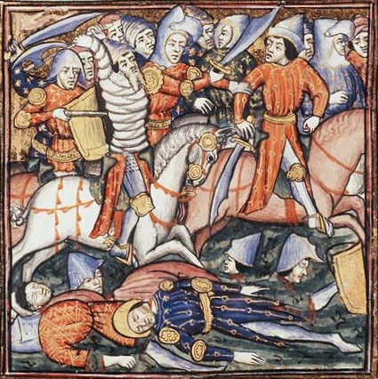

La Bataille de Cannes

Le contexte
En 216 av. J.-C., après ses victoires à la Trébie et au lac Trasimène, Hannibal continue de ravager le sud de l'Italie. Rome, humiliée et sous pression, décide d'en finir. Elle lève la plus grande armée de son histoire — environ 86 000 soldats — commandée par les deux consuls Lucius Aemilius Paullus et Térentius Varron.
Hannibal, lui, ne dispose que d'environ 50 000 hommes. Les Romains sont convaincus que le nombre suffira à écraser Carthage une bonne fois pour toutes. C'est une erreur fatale.
Source : Wikipedia — Bataille de Cannes
La manoeuvre d'Hannibal
Hannibal place volontairement ses troupes les plus faibles au centre de sa ligne de bataille, en forme de croissant bombé vers les Romains. Les Romains enfoncent facilement ce centre — exactement comme Hannibal l'avait prévu.
Pendant que les Romains avancent au centre, les ailes carthaginoises — composées de cavalerie et de soldats d'élite — se referment sur eux comme des mâchoires. Les 86 000 soldats romains se retrouvent complètement encerclés, incapables de bouger ou de combattre correctement. C'est ce qu'on appelle une double enveloppe, une des manoeuvres militaires les plus étudiées de toute l'histoire.
Source : Wikipedia — Bataille de Cannes
Une défaite catastrophique pour Rome
En une seule journée, Rome perd entre 50 000 et 70 000 soldats. C'est l'équivalent d'environ 20% de tous les hommes romains âgés de 20 à 30 ans. Une génération entière décimée en quelques heures. Le consul Paullus est tué au combat. Varron s'enfuit.
Malgré ce désastre sans précédent, Rome refuse de se rendre. Le Sénat interdit même aux familles de pleurer leurs morts en public pour ne pas briser le moral de la population. Rome reconstruit son armée et continue la guerre — une résilience qui finira par lui donner la victoire.
Source : Wikipedia — Bataille de Cannes